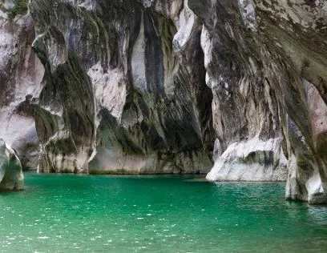
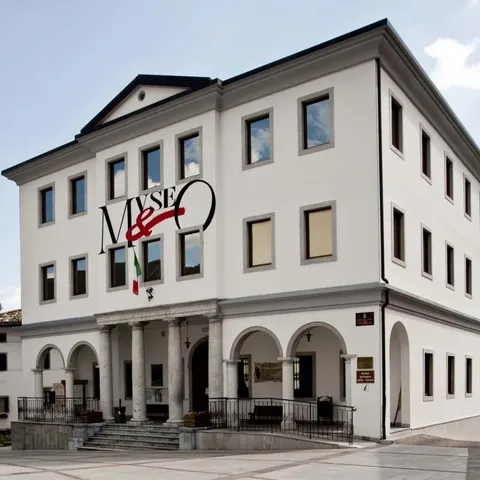

La Carnia è un arcipelago di piccoli paesi distribuiti su quattro vallate principali che si aprono da Tolmezzo (But, Chiarsò, Degano e Tagliamento) e su quattro valli minori (Valcalda, Lumiei, Pesarina e Pontaiba). Una varietà di ambienti e culture che per chi la visita diventa un ricco giacimento di emozioni.
Verso nord, a circa 18 km, c'è Sauris con il suo lago, il celebre prosciuttificio Wolf, attivo dal 1862, il birrificio Zahre Beer, il Carnevale e la Festa del Prosciutto di luglio. A mezz'ora le Dolomiti Friulane, patrimonio UNESCO, e la pista del Varmost di Forni di Sopra, da camminare d'estate e da sciare d'inverno, con il Dolomiti Adventure Park e i suoi ponti sospesi tra gli alberi. Verso sud, dopo una sosta al Caseificio Val Tagliamento, si raggiunge Tolmezzo, capitale della Carnia, con il Museo Carnico delle Arti Popolari.
La Carnia copre appena il 15,6% del Friuli Venezia Giulia, eppure è piena di sorprese e luoghi magici, dove si parlano diversi dialetti e lingue minoritarie: una terra da scoprire e, alla fine, da amare.

Visita la CarniaLa Forra del Lumiei
Un canyon in cui il torrente si inabissa creando scorci spettacolari, meta di trekker esperti e appassionati di canyoning. Il sentiero, tra i più suggestivi della Carnia, collegava anticamente Ampezzo a Sauris ed è percorribile anche grazie a un ponte metallico sospeso tra acqua e pietra.

Visita la CarniaAmpezzo, Palazzo Unfer
A 4 km da Mediis, Ampezzo, orgogliosa della storia della Repubblica Libera della Carnia, ospita a Palazzo Unfer il Museo Geologico della Carnia: rocce e fossili di una delle poche zone d'Europa in cui il patrimonio paleontologico si è conservato così completo, con percorsi pensati anche per i bambini. Nello stesso palazzo, la pinacoteca di Marco Davanzo (1872–1955), che dipinse la Carnia con la luce cristallina della montagna.

Visita la CarniaPreone e la sua valle
A pochi chilometri da Socchieve, Preone si trova all'ingresso di una valle che sembra nascosta al mondo, tranquilla e intatta tra due montagne. Il paese stesso è una visita, e i sentieri e le cime intorno, dove sono stati trovati molti dei fossili esposti ad Ampezzo, completano il quadro.

Visita la CarniaVal Pesarina, la valle del tempo
Confinante con Socchieve lungo la cima del Col Gentile, la Val Pesarina custodisce a Pesariis il museo dell'orologeria e l'architettura tipica della montagna friulana, come i celebri stavoli di Orias.